컴퓨터응용가공산업기사 (2013-06-02 기출문제)
1과목: 기계가공법 및 안전관리
1. 가공물이 대형이거나, 무거운 중량제품을 드릴 가공할 때에, 가공물을 고정식이고 드릴 스핀들을 암 위에서 수평으로 이동시키면서 가공할 수 있는 것은?
- 직립 드릴링 머신
- 레이디얼 드릴링 머신
- 터릿 드릴링 머신
- 만능 포터블 드릴링 머신
(정답률: 75%)

2. 드릴링 머신의 안전 사항에서 틀린 것은?
- 장갑을 끼고 작업을 하지 않는다.
- 가공물을 손으로 잡고 드릴링하지 않는다.
- 얇은 판의 구멍 뚫기에는 나무 보조판을 사용한다.
- 구멍 뚫기가 끝날 무렵은 이송을 빠르게 한다.
(정답률: 90%)
3. 내연기관의 실린더 내면에 진원도, 진직도, 표면거칠기 등을 더욱 향상시키기 위한 가공방법은?
- 래핑
- 호닝
- 수퍼피니싱
- 버핑
(정답률: 55%)
4. 사인바로 각도를 측정할 때 몇 도를 넘으면 오차가 가장 심하게 되는가?
- 10°
- 20°
- 30°
- 45°
(정답률: 83%)
5. 윤활방법 중 무명이나 털 등을 섞어 만든 패드의 일부를 기름통에 담가 저널의 아랫면에 모세관 현상을 이용하여 급유하는 것은?
- 적하 급유(drop feed oiling)
- 비말 급유(splash oiling)
- 패드 급유(pad oiling)
- 강제 급유(oil bath oiling)
(정답률: 81%)
6. 선반에서 이동용 방진구를 설치하는 곳은?
- 새들
- 주축대
- 심압대
- 베드
(정답률: 60%)
7. 전해연삭 가공의 특징이 아닌 것은?
- 경도가 낮은 재료일수록 연삭능률이 기계연삭보다 높다.
- 박판이나 형상이 복잡한 공작물을 변형없이 연삭할 수 있다.
- 연삭저항이 적으므로 연삭열 발생이 적고, 숫돌 수명이 길다.
- 정밀도는 기계연삭보다 낮다.
(정답률: 42%)
8. 선반 작업에서 발생하는 재해가 아닌 것은?
- 칩에 의한 것
- 정밀 측정기에 의한 것
- 가공물의 회전부에 휘감겨 들어가는 것
- 가공물과 절삭 공구와의 사이에 휘감기는 것
(정답률: 88%)
9. 다이얼게이지의 사용상 주의사항이 아닌 것은?
- 스핀들이 원활히 움직이는가를 확인한다.
- 스탠드를 앞뒤로 움직여 지시값이 차를 확인한다.
- 스핀들을 갑자기 작동시켜 반복 정밀도를 본다.
- 다이얼게이지의 편차가 클 때는 교환 또는 수리가 불가능하므로 무조건 폐기시킨다.
(정답률: 81%)
10. 밀링작업에서 상향절삭과 하향절삭의 특징을 비교했을 때 상향절삭에 해당하는 것은?
- 동력의 소비가 적다.
- 마찰열의 작용으로 가공면이 거칠다.
- 가공할 때 충격이 있어 높은 강성이 필요하다.
- 뒤틈(backlash) 제거장치가 없으면 가공이 곤란하다.
(정답률: 58%)
11. 다음 중 일반적으로 표면정밀도가 낮은 것부터 높은 순서로 바른 것은?
- 래핑→연삭→호닝
- 연삭→호닝→래핑
- 호닝→연삭→래핑
- 래핑→호닝→연삭
(정답률: 62%)
12. 연삭숫돌의 결합제와 기호를 짝지은 것이 잘못된 것은?
- 레지오니드-G
- 비트리파이드-V
- 셸락-E
- 고무-R
(정답률: 77%)
13. 밀링머신에서 할 수 없는 가공은?
- 총형 가공
- 기어 가공
- 널링 가공
- 나선홈 가공
(정답률: 83%)
14. 회전 중에 연삭숫돌이 파괴될 것을 대비하여 설치하는 안전 요소는?
- 덮개
- 드레서
- 소화 장치
- 절삭유 공급 장치
(정답률: 87%)
15. 선반에서 원형 단면을 가진 일감의 지름 100mm인 탄소강을 매분 회전수 314r/min(=rpm)으로 가공할 때, 절삭저항력이 736N이었다. 이 때 선반의 절삭효율을 80%라 하면 필요한 절삭동력은 약 몇 PS인가?
- 1.1
- 2.1
- 4.4
- 6.2
(정답률: 46%)
16. 허용한계치수의 해석에서 “통과측에는 모든 치수 또는 결정량이 동시에 검사되고 정지측에는 각각의 치수가 개개로 검사되어야 한다.”는 무슨 원리인가?
- 아베(Abbe)의 원리
- 테일러(Taylor)의 원리
- 헤르츠(Hertz)의 원리
- 후크(Hook)의 원리
(정답률: 61%)
17. 선반에서 지름 125mm, 길이 350mm인 연강봉을 초경합금 바이트로 절삭하려고 한다. 분당 회전수(r/min=rpm)는 약 얼마인가? (단, 절삭속도는 150m/mim이다.)
- 720
- 382
- 540
- 1200
(정답률: 69%)
18. 일반적으로 요구되는 절삭공구의 조건으로 적합하지 않은 것은?
- 고마찰성
- 고온경도
- 내마모성
- 강인성
(정답률: 87%)
19. 직접측정의 장점에 해당되지 않는 것은?
- 측정기의 측정범위가 다른 측정법에 비하여 넓다.
- 측정물의 실체치수를 직접 읽을 수 있다.
- 수량이 적고, 많은 종류의 제품 측정에 적합하다.
- 측정자의 숙련과 경험이 필요없다.
(정답률: 77%)
20. 스핀들이 수직이며, 스핀들은 안내면을 따라 이송되며, 공구위치는 크로스 레일 공구대에 의해 조절되는 보링머신은?
- 수직 보링 머신
- 정밀 보링 머신
- 지그 보링 머신
- 코어 보링 머신
(정답률: 78%)
2과목: 기계설계 및 기계재료
21. 황동에서 잔류응력에 의해서 발생하는 현상은?
- 탈아연 부식
- 고온 탈아연
- 저온 풀림경화
- 자연균열
(정답률: 69%)
22. 다음 중 뜨임처리의 목적으로 틀린 것은?
- 담금질 응력 제거
- 치수의 경년 변화 방지
- 연마 균열의 방지
- 내마멸성 저하
(정답률: 69%)
23. 내식성과 내산화성이 크고, 성형성이 다른 것에 비해 좋은 비자성의 스테인리스강은?
- 페라이트계
- 마텐자이트계
- 오스테나이트계
- 석출경화형
(정답률: 56%)
24. Fe-C계 상태도에서 3개소의 반응이 있다. 옳게 설명한 것은?
- 공정-포정-편정
- 포석-공정-공석
- 포정-공정-공석
- 공석-공정-편정
(정답률: 78%)
25. 주철에 대한 설명으로 바르지 못한 것은?
- 시멘타이트+펄라이트의 회주철과, 페라이트+펄라이트의 백주철이 있다.
- 백주철을 열처리하여 연성을 부여한 주철을 가단주철이라 한다.
- 주철중의 Si은 공정점을 저탄소강영역으로 이동시키는 역학을 한다.
- 용융점이 낮고 주조성이 좋다.
(정답률: 48%)
26. 다음 중 강의 5대 원소에 속하지 않는 것은?
- C
- Mn
- Cr
- Si
(정답률: 64%)
27. 표면 경화법에서 금속 침투법이 아닌 것은?
- 세라다이징
- 크로마이징
- 칼로라이징
- 방전경화법
(정답률: 86%)
28. 두랄루민은 Al에 어떤 원소를 첨가한 합금인가?
- Cu+Mg+Mn
- Fe+Mo+Mn
- Zn+Ni+Mn
- Pb+Sn+Mn
(정답률: 83%)
29. 다음 중 경금속이 아닌 것은?
- 알루미늄
- 마그네슘
- 백금
- 티타늄
(정답률: 66%)
30. 다음 중 복합재료에서 섬유강화금속은?
- GFRP
- CFRP
- FRS
- FRM
(정답률: 82%)
31. 베어링의 설계시 주의사항으로 옳지 않는 것은?
- 마모가 적을 것
- 구조가 간단하여 유지보수가 쉬울 것
- 마찰저항이 크고 손실동력이 감소할 것
- 강도를 충분히 유지할 것
(정답률: 86%)
32. 일정한 주기 및 진폭으로 반복하여 계속 작용하는 하중으로 편진하중을 의미하는 것은?
- 변동하중(variable load)
- 반복하중(repeated load)
- 교번하중(alternate load)
- 충격하중(impact load)
(정답률: 78%)
33. 3.68kW의 동력으로 회전하는 드럼을 블록 브레이크를 이용하여 제동하고자 할 때 브레이크의 용량(brake capacity)은 약 몇 MPaㆍm/s인가? (단, 브레이크 블록의 길이가 100mm, 너비 30mm이고, 접촉부 마찰계수는 0.2이다.)(오류 신고가 접수된 문제입니다. 반드시 정답과 해설을 확인하시기 바랍니다.)
- 0.12
- 0.25
- 0.64
- 1.23
(정답률: 22%)
34. 축의 원주에 여러 개의 키를 가공한 것으로 큰 토크를 전달할 수 있고 내구력이 크며 축과 보스와의 중심축을 정확하게 맞출 수 있는 것은?
- 스플라인
- 미끄럼 키
- 묻힘 키
- 반달 키
(정답률: 75%)
35. 원주속도가 4m/s로 18.4kW의 동력을 전달하는 헬리컬기어에서 비틀림각이 30°일 때 축방향으로 작용하는 힘(추력)은 약 몇 kN인가?
- 1.8
- 2.3
- 2.7
- 4.0
(정답률: 32%)
36. 지름이 20mm인 축이 114rpm으로 회전할 때 최대 약 몇 kW의 동력을 전달할 수 있는가? (단, 축 재료의 허용전단응력은 39.2MPa이다.)
- 0.74
- 1.43
- 1.98
- 2.35
(정답률: 22%)
37. 스프링의 용도로 거리가 먼 것은?
- 진동 또는 충격에너지를 흡수
- 에너지를 저축하여 동력원으로 작용
- 힘의 측정에 사용
- 동력원의 제동
(정답률: 59%)
38. 롤러 체인 전동에서 체인의 차단하중이 1.96kN이고, 체인의 회전속도가 3m/s이며, 안전율(safety factor)을 10으로 할 때 전달 동력은 약 몇 W인가?
- 467
- 588
- 712
- 843
(정답률: 56%)
39. 리벳 이음의 장점에 해당하지 않는 것은?
- 열응력에 의한 잔류응력이 생기지 않는다.
- 경합금과 같이 용접이 곤란한 재료의 결합에 적합하다.
- 리벳 이음한 구조물에 대해서 분해 조립이 간편하다.
- 구조물 등에 사용할 때 현장조립의 경우 용접작업보다 용이하다.
(정답률: 49%)
40. 2줄 나사의 리드(lead)가 3mm인 경우 피치는 몇 mm인가?
- 1.5
- 3
- 6
- 12
(정답률: 49%)
3과목: 컴퓨터응용가공
41. 페라메트릭 모델링에 관한 다음 설명 중 가장 거리가 먼 것은?
- 형상구속조건과 치수구속조건을 이용하여 모델링한다.
- 구속조건식을 푸는 방법으로 순차적 풀기, 동시풀기 방법에 따라 결과형상이 달라질 수 있다.
- 특징형상의 파라미터에 따라 모델의 크기를 바꾸는 것도 파라메트릭 모델링의 한 형태이다.
- 파라메트릭 모델링의 형상요소를 한번 만든 후에는 조건식을 이용하여 수정하는 것보다 직접 형상요소를 수정하는 것이 효과적이다.
(정답률: 64%)
42. 다음 중 CNC 공작기계들과 핸들링 로봇, APC, ATC, 무인 운반차 등의 자동이송장치 및 자동창고 등을 갖춘 제조공정을 네트워크화하여, 중앙컴퓨터로 제어하는 시스템으로 제품과 시장수요의 변화에 빠르고 유연하게 대응할 수 있는 자동화된 제조시스템을 일컫는 용어는?
- DNC(Distributed Numerical Control)
- PLM(Product Lifecycle Management)
- FMS(Flexible Manufacturing System)
- VMS(Virtual Manufacturing System)
(정답률: 75%)
43. DNC 운전시 데이터의 전송속도를 나타내는 것은?
- RTS
- DSR
- BPS
- CTS
(정답률: 82%)
44. 자유 곡면의 NC가공을 계획하는 과정에서 가공 영역을 지정하는 방식 중 지정된 폐곡선 영역의 외부를 일정옵셋(offset)량을 주어 가공하는 지정 방식은?
- area 지정
- trimming 지정
- island 지정
- blending 지정
(정답률: 74%)
45. CAD/CAM시스템에서 모델링된 도형을 보다 현실감 있게 정적으로 화면에 디스플레이 하기 위해 사용되는 것이 아닌 것은?
- 색채 모델링(color modeling)
- 모핑(morphing)
- 음영기법(shading)
- 은선/은면 제거(hidden line/surface removal)
(정답률: 64%)
46. 곡면 모델링에 관련된 기하하적 요소(Geometric entity)와 관련이 없는 것은?
- 점(point)
- 픽셀(pixel)
- 곡선(curve)
- 곡면(surface)
(정답률: 80%)
47. CAD/CAM 프로그램을 이용한 모델링에 대한 일반적인 설명으로 잘못된 것은?
- 와이어 프레임 모델링은 체적을 구할 수 있다.
- 곡면 모델링(서피스 모델링)은 3차원 가공용 곡면작업이 용이하다.
- 솔리드 모델링에서는 물리적 계산 및 시뮬레이션 작업이 가능하다.
- 솔리드 모델링은 다른 방법에 비해 상대적으로 큰 저장용량이 요구된다.
(정답률: 80%)
48. 그래픽처리 디스플레이 장치에 의해서 화면을 구성하는 경우 화면을 구성하는 가장 최소 단위는?
- 픽셀(pixel)
- 스캔(sean)
- 빔(beam)
- 비트(bit)
(정답률: 72%)
49. Bezier 곡선에 대한 일반적인 설명으로 틀린 것은?
- Bezier 곡선은 이를 정의하는 다각형의 시작과 끝을 통과한다.
- Bezier 곡선을 정의하는 다각형의 첫 번째 선분은 Bezier 곡선의 시작점에서의 접선 벡터와 같다.
- Bezier 곡선을 정의하는 다각형의 블록껍질(convex hull)은 Bezier 곡선을 포함한다.
- Bezier 곡선을 정의하는 다각형의 꼭지점 순서를 거꾸로 하면 다른 곡선이 생성된다.
(정답률: 68%)
50. 물리적인 모델 또는 제품으로부터 측정 작업을 수행, 3차원 형상 데이터를 얻어내는 방법을 가리키는 용어는?
- 형상 역공학(RE)
- FMS
- RP
- PDM
(정답률: 57%)
51. 솔리드 모델링의 데이터 구조에서 정점(vertex), 면(face), 모서리(edge) 등 솔리드의 경계 정보를 저장하는 방식은?
- CGS 방식
- B-rep 방식
- NURBS 방식
- B-spline 방식
(정답률: 52%)
52. 다음 설명이 의미하는 데이터 표준 규격은?
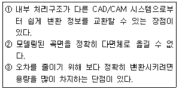
- STEP
- STL
- DXF
- IGES
(정답률: 30%)
53. 지정된 모든 점을 통과하면서도 부드럽게 연결된 곡선은 어느 것인가?
- Bi-aec 곡선
- 스플라인 곡선
- 베지어 곡선
- B-spline 곡선
(정답률: 76%)
54. 3차원 솔리드 모델링 형상 표현방법 중 CSG(Constructive Solid Geometry)에 해당되는 사항은?
- 경계면에 의한 표현
- 스위프(Sweep)에 의한 표현
- 로프트(Loft)에 의한 표현
- 프리미티브(Primitive)에 의한 표현
(정답률: 73%)
55. CAD 시스템을 구성하는 주요 기능과 가장 연관이 없는 것은?
- 운영 시스템(OS) 체크 기능
- 문자 작성 기능
- 형상 치수 점검 기능
- 다른 CAD 시스템의 자료와 호환하는 기능
(정답률: 74%)
56. 3차 Hermite 곡선식의 기하 계수(geometric coefficient)에 해당하는 것은?
- 곡선 상의 임의의 4개의 점
- 곡선의 양 끝점과 곡선 상의 임의의 2개의 점
- 곡선의 양 끝점과 양 끝점에서의 접선 벡터
- 곡선 상의 임의의 4개의 점에서의 접선 벡터
(정답률: 59%)
57. 반경이 R=√5cm인 볼 엔드밀로 평면을 가공하려고 한다. 경로 간 간격이 2cm일 때 커습(cusp) 높이는?
- √5-1cm
- √5-2cm
- 1cm
- 2cm
(정답률: 82%)
58. 머시닝센터에서 3차원 곡면을 정삭 가공 하고자 할 때 다음 중 가장 많이 사용되는 공구는?
- 플랫 엔드밀(flat endmill)
- 페이스 커터(face cutter)
- 필렛 엔드밀(fillet endmill)
- 볼 엔드밀(ball endmill)
(정답률: 85%)
59. 원추곡선(conic curve)을 그리기 위해 필요한 요소가 아닌 것은?
- 곡선의 양 끝점
- 양 끝점의 접선
- 양 끝점의 곡률 반경
- 곡선 위의 한 점
(정답률: 52%)
60. 점 데이터로 곡면을 형성할 때 측정오차 등으로 인한 굴곡이 있는 경우 이를 평활하게 하는 것은?
- 블렌딩(blending)
- 필렛팅(filleting)
- 페어링(fairing)
- 피팅(fitting)
(정답률: 33%)
4과목: 기계제도 및 CNC공작법
61. 개스킷, 박판, 형강 등과 같이 절단면이 얇은 경우 이를 나타내는 방법으로 옳은 것은?
- 실제 치수와 관계없이 1개의 가는 1점 쇄선으로 나타낸다.
- 실제 치수와 관계없이 1개의 극히 굵은 실선으로 나타낸다.
- 실제 치수와 관계없이 1개의 굵은 1점 쇄선으로 나타낸다.
- 실제 치수와 관계없이 1개의 극히 굵은 2점 쇄선으로 나타낸다.
(정답률: 49%)
62. KS 재료 기호가 "SF 340A" 인 것은?
- 기계구조용 주강
- 일반구조용 압연 강재
- 탄소강 단강품
- 기계구조용 탄소 강판
(정답률: 48%)
63. 치수 보조기호 중 구(sphere)의 지름 기호는?
- R
- SR
- ø
- Sø
(정답률: 71%)
64. 그림과 같은 표면의 결 도시 기호에서 "B" 의 의미로 옳은 것은?
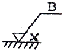
- 보링 가공
- 벨트 연삭
- 블러싱 다듬질
- 브로칭 가공
(정답률: 72%)
65. 끼워 맞춤에서 H7/r6은 어떤 워 맞춤인가?
- 구멍기준식 중간 끼워 맞춤
- 구멍기준식 억지 끼워 맞춤
- 구멍기준식 헐거운 끼워 맞춤
- 구멍기준식 고정 끼워 맞춤
(정답률: 72%)
66. 도면의 양식에서 다음 중 반드시 표시하지 않아도 되는 항목은?
- 표제란
- 그림영역을 한정하는 윤곽선
- 비교 눈금
- 중심 마크
(정답률: 64%)
67. 그림과 같은 입체도에서 화살표 방향이 정면일 때 정투상법으로 나타낸 투상도 중 잘못된 도면은?
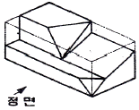
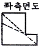
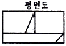
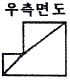
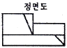
(정답률: 71%)
68. 치수가
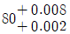
로 나타날 경우 위치수 허용차는?- 0.008
- 0.002
- 0.010
- 0.006
(정답률: 56%)
69. 스퍼기어를 제도할 경우 스퍼기어 요목표에 일반적으로 기입하지 않는 것은?
- 피치원 지름
- 모듈
- 압력각
- 기어의 치폭
(정답률: 62%)
70. 기계제도에서 치수선을 나타내는 방법에 해당하지 않는 것은?
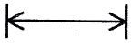
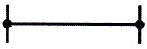
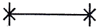
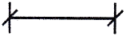
(정답률: 60%)
71. 머시닝센터에서 ø12, 4날 황삭용 초경 평엔드밀로 SM45C의 공작물을 가공물을 가공하고자 한다. 이 경우 절삭 조건표에 의하면 절삭속도 V=35m/min이고, 공구 날당 이송 fz=0.06mm/tooth이다. 공구의 이송속도 F는 몇 mm/min 인가?
- 183
- 223
- 253
- 283
(정답률: 63%)
72. CNC 공작기계의 일반적인 특징이라고 볼 수 없는 것은?
- 복잡한 형상의 제품을 가공하려면 특수공구가 필요하여 공구관리비가 많이 든다.
- 제품의 균일성을 유지할 수 있다.
- 작업자의 피로를 감소할 수 있다.
- 제품의 일부가 일정한 사이클을 가지고 변화하는 제품 가공에 적응석이 좋다.
(정답률: 79%)
73. 다음 CNC 선반 프로그램에서 (A)의 R, (B)의 D가 의미하는 것은 무엇인가?
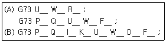
- 분할 횟수
- 구멍바닥에서 정지ㆍ시간 지정
- X축 방향 다듬 절삭 여유
- 1회 절입량 지정
(정답률: 31%)
74. 와이어 컷 방전가공에서 세컨드 컷 가공의 목적과 효과가 아닌 것은?
- 코너부의 형상에러 및 가공면의 진직정도의 수정
- 가공 이송속도의 수정
- 다이 형상에서의 동기부분 제거
- 가공물의 내부 응력 개방 후의 형상수정.
(정답률: 58%)
75. CNC 공작기계로 자동운전 중 이송만 멈추게 하려면 어느 버튼을 누르는가?
- FEED HOLD
- SINGLE BLOCK
- DRY RUN
- Z AXIS LOCK
(정답률: 81%)
76. 다음 CNC 선반 프로그램에서 N7 블록의 절삭속도는 약 몇 m/min 인가?
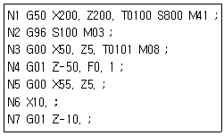
- 25
- 50
- 100
- 800
(정답률: 27%)
77. 머시닝센터 프로그램에서 A점에서 출발하여 시계방향으로 360° 원호가공 할 경우 지령은?
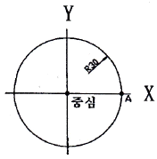
- G02 I30.0 F100 ;
- G02 I-30.0 F100 ;
- G02 J30.0 F100 ;
- G02 J-30.0 F100 ;
(정답률: 59%)
78. 서보 모터(servo motor)에서 위치 검출을 수행하는 방식으로서, 백래시(backlash)의 오차를 줄이기 위해 볼스크루(ball screw) 등을 활용하여 정밀도 문제를 해결하고 있으며 일반 CNC 공작기계에서 가장 많이 사용되는 다음과 같은 서보(servo) 방식은?
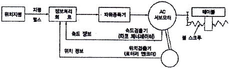
- 개방회로 방식(open loop system0
- 반폐쇄회로 방식(semi-closed loop system)
- 폐쇄회로 방식(closed loop system)
- 반개방회로 방식(semi-open loop system)
(정답률: 83%)
79. CNC 선반에서 공구보정(offset) 번호 6번을 선택하여, 1번 공구를 사용하려고 할 때 공구지령으로 옳은 것은?
- TO601
- TO106
- T1060
- T6010
(정답률: 81%)
80. CNC 선반 조작시 주의사항에 해당되는 않는 것은?
- 기계조작은 조작순서에 의하여 행한다.
- 급속 이송시 공구와 공작물의 충돌에 주의한다.
- 프로그램을 작성할 때는 다른 프로그램을 도우 삭제한다.
- 공구 교환시 공구와 공작물의 충돌에 주의한다.
(정답률: 89%)